30 July 2026
Trans eQTL hotspots (trans bands) can reveal master regulators that influence many genes from a distal genomic location, but separating them from residual cis signals remains a central challenge in genetical genomics studies. We re-analyzed adipose and liver RNA-seq data from ~411 Heterogeneous Stock NIH (HSNIH-Palmer) rats using a linkage disequilibrium (LD) based cis definition (r² ≥ 0.6) instead of the conventional fixed 1 Mb window. The LD-aware classification removed 1,442 adipose and 900 liver false-trans peaks while leaving the major trans-band hotspots intact. For functional interpretation, we generated a conservative, well-annotated gene universe by filtering raw GEMMA results to 4 ≤ -log₁₀ P ≤ 80 and removing poorly annotated genes (LOC, Riken, pseudogenes, uncharacterised). This yielded 6,540 adipose, 3,790 liver, and 8,349 combined background genes. GO/KEGG over-representation analysis with g:Profiler2 (GO BP, GO CC, GO MF and KEGG only) showed coherent tissue biology: adipose hotspots converged on RNA/nucleic-acid metabolism and chromatin organization, whereas liver hotspots pointed to sterol/steroid metabolism. No GO/KEGG terms were shared between the two tissues, arguing for largely tissue-specific trans regulation. These results validate the trans-band catalog as biologically meaningful and confirm the priority regions, adipose Chr5:68–70 Mb and liver Chr4:177–179 Mb, for the next pan-genomic structural-variant re-mapping step.
Expression quantitative trait locus (eQTL) mapping links genetic variation to gene expression. Cis eQTLs, where the regulatory variant lies near the target gene, are abundant and well characterized, whereas trans eQTLs act from distal locations and can reveal master regulators and gene networks that influence many transcripts simultaneously. Clusters of trans eQTLs that map to the same genomic region are commonly called trans eQTL bands or trans eQTL hotspots (Breitling et al., 2008; Mozhui et al., 2008).
A major difficulty in trans eQTL analysis is separating true distal regulation from technical and analytical artifacts. Sequence mismatch, reference bias, poorly annotated transcripts, and arbitrary cis windows can all produce spurious distal signals (Alberts et al., 2007; Peirce et al., 2006). In particular, a fixed 1–2 Mb cis window may over- or under-call cis eQTLs depending on local recombination and LD structure. Here we define cis intervals directly from the HS rat genotype data: for each peak marker we compute LD with all markers within 5 Mb and define the cis region as the contiguous interval where r² ≥ 0.6 with the lead marker. This gives each peak a data-driven, locally adaptive cis interval.
Pan-genomic re-mapping, including structural variants (SVs), is expected to refine the causal variants behind these hotspots (Garrison et al., 2024). Before that step, however, it is important to establish that the called trans bands are biologically interpretable rather than random noise. We therefore performed GO/KEGG over-representation analysis on the trans-band gene sets (Kolberg et al., 2023), using a conservative universe of well-annotated genes that pass the same discovery threshold as the trans bands.
We analyzed adipose and liver RNA-seq data from the HSNIH-Palmer rat population (N ≈ 411), mapped to the mRatBN7.2 (rn7) reference genome with GEMMA via GeneNetwork 2 (Zhou & Stephens, 2012). After the upper -logP cut (≤ 80) and the rough well-annotated filter, 21,128 transcripts remained; the stricter universe filter (4 ≤ -logP ≤ 80, well-annotated, Ensembl gene IDs) retained 6,540 adipose and 3,790 liver genes (8,349 in the union).
The LD-based Peirce-style cis–trans overview plots in Figure 1 show the classic diagonal cis pattern and the most prominent horizontal trans bands. In adipose the strongest trans band is on chromosome 5 near 68–70 Mb; in liver, a prominent band appears on chromosome 4 near 177–179 Mb.
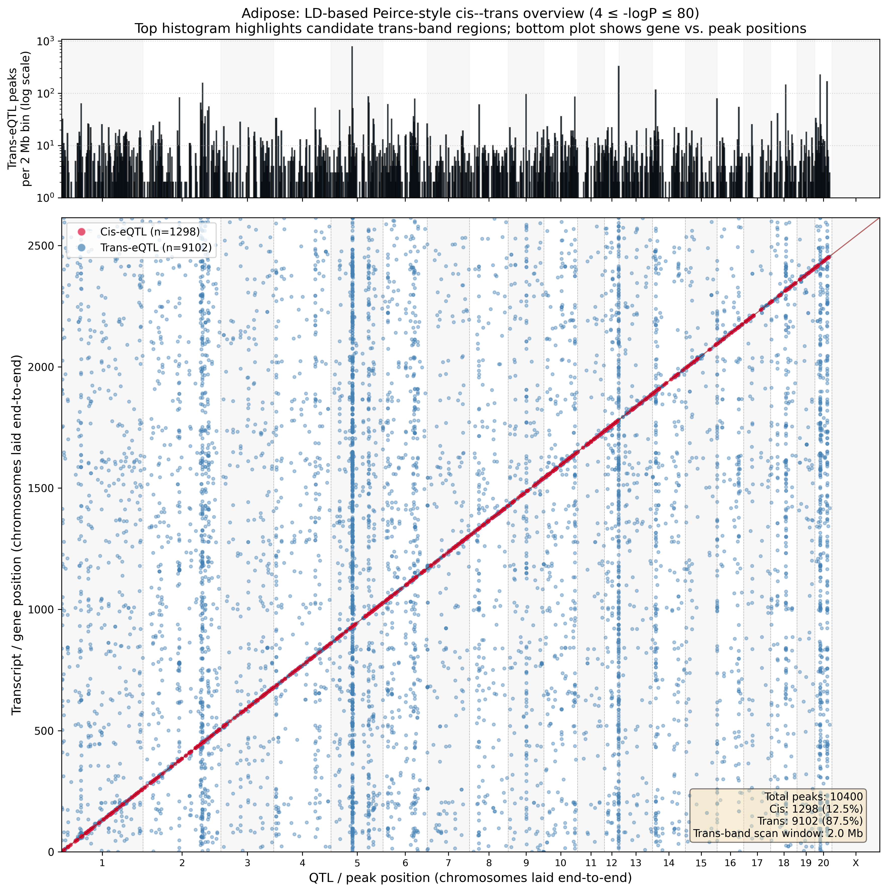
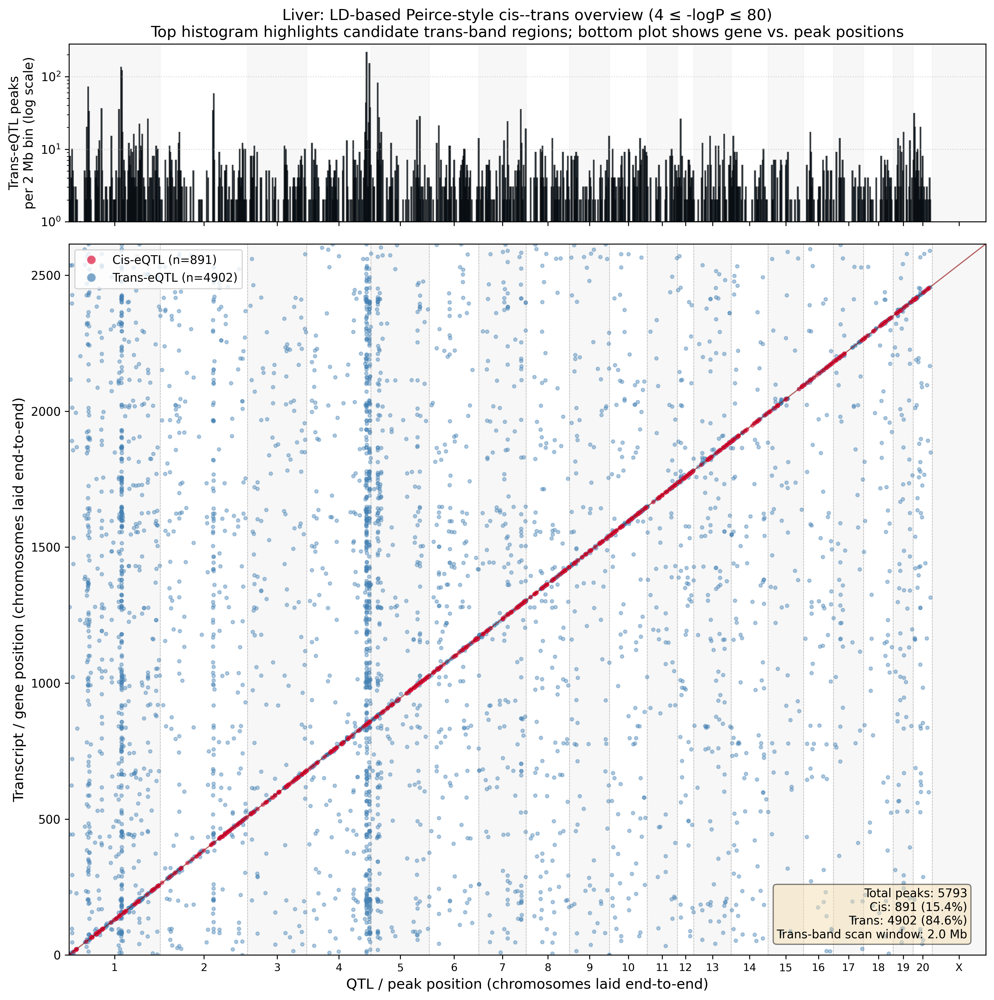
Replacing the fixed 1 Mb cis window with the LD-based definition (r² ≥ 0.6) reduced cis calls by roughly half because the true LD block around many peak markers is smaller than 1 Mb (Table 1). The major trans bands remained robust, which increases confidence that they are real biological signals rather than artifacts of the cis window.
Table 1. Cis and trans counts with fixed 1 Mb versus LD-based cis definitions for peaks with 4 ≤ -log₁₀ P ≤ 80.
| Tissue | Fixed 1 Mb cis | Fixed 1 Mb trans | LD-based cis (r² ≥ 0.6) | LD-based trans |
|---|---|---|---|---|
| Adipose | 2,740 (26.3%) | 7,670 (73.7%) | 1,298 (12.5%) | 9,112 (87.5%) |
| Liver | 1,791 (30.9%) | 4,006 (69.1%) | 891 (15.4%) | 4,906 (84.6%) |
Trans bands were called by sliding a 2 Mb window across the genome and counting trans eQTL peaks per window, with a 10 Mb exclusion zone and a minimum of three peaks. Using the LD-based trans set, we identified 136 adipose and 123 liver trans bands at -log₁₀ P ≥ 4 (Table 2). For the GO/KEGG re-run, all bands were retained (FDR threshold = 1.00) so that we could assess which bands produced any coherent biological signal.
Table 2. LD-based trans band catalogs and GO/KEGG enrichment yield.
| Tissue | LD-based trans bands | Bands with ≥ 1 significant GO/KEGG term | Min FDR in catalog |
|---|---|---|---|
| Adipose | 136 | 11 | 0.136 |
| Liver | 123 | 2 | 0.246 |
The lower enrichment yield in liver reflects the smaller number of liver peaks and the stricter universe filter, but the liver bands that do enrich are highly tissue specific (Section 2.3). Table 3 lists the enriched bands.
Table 3. Trans bands with at least one significant GO/KEGG term.
| Tissue | Band (chr:start–end Mb) | Peaks | Max -log₁₀ P | Significant GO/KEGG terms | Best p-adj | Top term |
|---|---|---|---|---|---|---|
| Adipose | 5:68–70 | 619 | 8.0 | 115 | 4.3 × 10⁻⁴⁶ | Nucleic acid metabolic process |
| Adipose | 5:119–121 | 106 | 7.9 | 12 | 1.9 × 10⁻⁴ | Collagen fibril organization |
| Adipose | 6:100–102 | 59 | 7.8 | 9 | 8.1 × 10⁻⁸ | Extracellular region |
| Adipose | 12:43.5–45.5 | 306 | 37.4 | 4 | 6.7 × 10⁻⁵ | Organelle membrane |
| Adipose | 2:188.5–190.5 | 164 | 9.3 | 3 | 5.2 × 10⁻⁵ | Protein processing in endoplasmic reticulum |
| Adipose | 6:71.5–73.5 | 19 | 47.1 | 3 | 5.0 × 10⁻⁴ | Pre-mRNA 5’-splice site binding |
| Adipose | 14:10–12 | 75 | 10.6 | 2 | 1.3 × 10⁻⁷ | Ribosome biogenesis |
| Adipose | 4:7–9 | 51 | 7.4 | 2 | 2.5 × 10⁻² | RNA biosynthetic process |
| Adipose | 19:47.5–49.5 | 6 | 5.4 | 2 | 1.4 × 10⁻² | RNA processing |
| Adipose | 10:98–100 | 74 | 65.2 | 1 | 4.4 × 10⁻³ | Mitochondrion |
| Adipose | 13:86.5–88.5 | 15 | 65.8 | 7 | 5.6 × 10⁻⁸ | Olfactory receptor activity |
| Liver | 4:177–179 | 147 | 9.6 | 1 | 1.5 × 10⁻² | Steroid biosynthesis |
| Liver | 8:118–120 | 6 | 9.1 | 1 | 1.0 × 10⁻² | Attachment of spindle microtubules to kinetochore |
The trans-band Manhattan plots in Figure 2 place every trans-eQTL peak on the genome, with the LD-based logP4 bands highlighted as gold intervals. The two priority hotspots for follow-up are the adipose Chr5:68–70 Mb band and the liver Chr4:177–179 Mb band. The interactive HTML versions below the static figure allow zooming and panning.
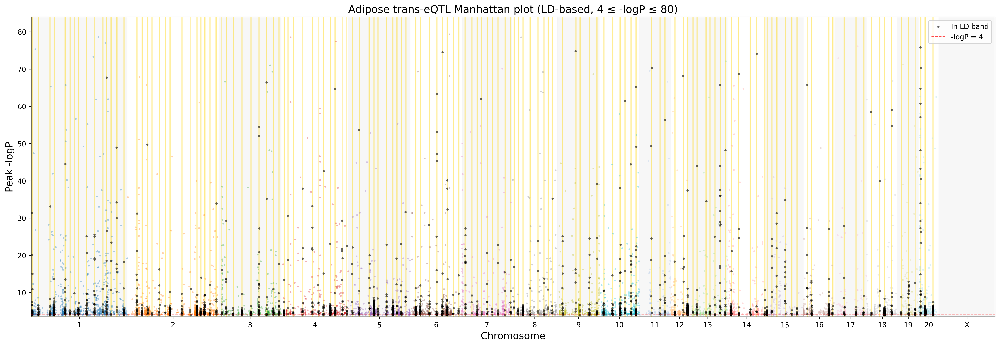
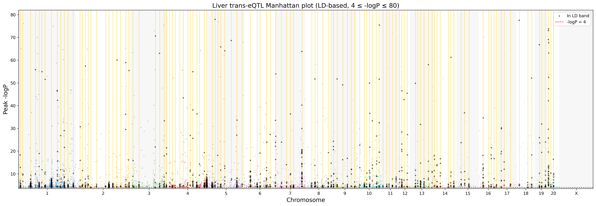
Interactive zoomable versions of Figure 2. Hover over points for gene and peak information; use the plot toolbar to zoom, pan, or save a PNG.
Figure 3 zooms into the two priority regions. Points are coloured by the chromosome of the target gene (the gene-of-origin), illustrating that the bands receive input from many chromosomes, as expected for true trans regulation.
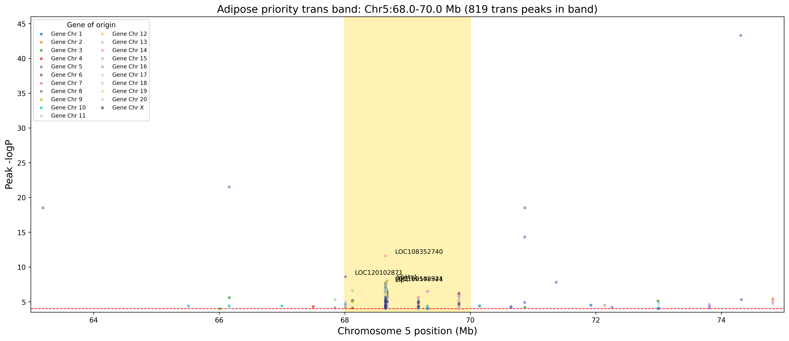
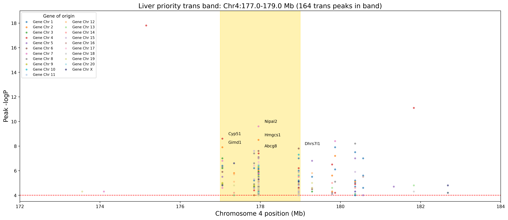
Interactive zoomable versions of Figure 3. Hover for gene details, zoom into the band region, and pan along the chromosome.
We ran over-representation analysis with gprofiler2 against GO Biological Process, GO Cellular Component, GO Molecular Function and KEGG for Rattus norvegicus. The background universe was built from the same raw GEMMA tables after applying the 4 ≤ -log₁₀ P ≤ 80 and well-annotated filters. Terms with adjusted p < 0.05 were retained.
Table 4. Number of significant GO/KEGG terms by annotation source.
| Tissue | GO BP | GO CC | GO MF | KEGG | Total |
|---|---|---|---|---|---|
| Adipose | 77 | 43 | 33 | 7 | 160 |
| Liver | 3 | 0 | 0 | 4 | 7 |
No GO/KEGG terms were shared between adipose and liver; all 167 significant terms were tissue specific. This argues against a generic housekeeping signal and supports tissue-specific trans regulation.
Figure 4 shows the overlap of target genes across the six largest trans bands (four adipose, two liver). Most gene sharing is within adipose bands; the two liver bands share only a handful of genes with adipose, reinforcing tissue specificity.
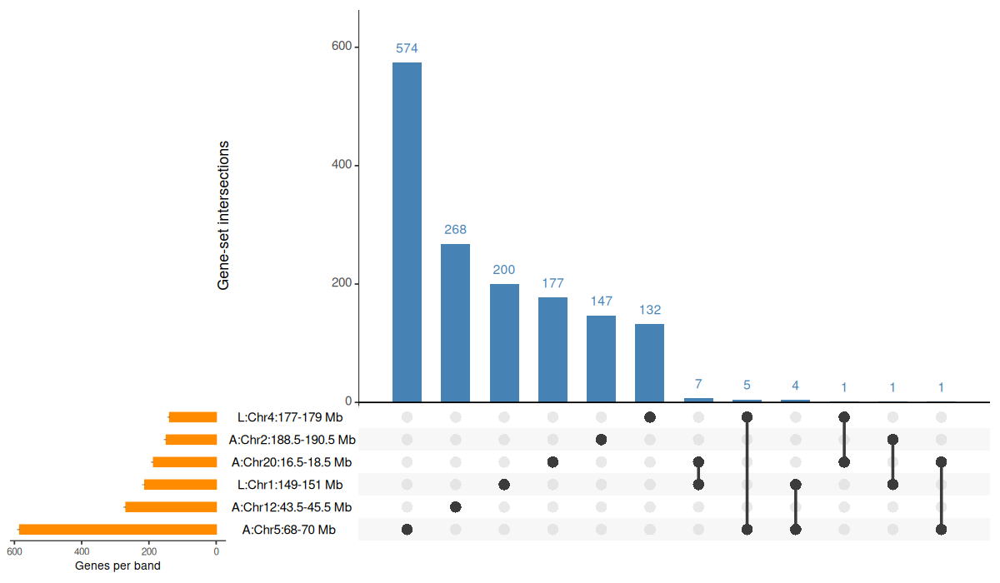
The band-by-term heatmap in Figure 5 clusters terms and bands by shared enrichment. Three main neighbourhoods emerge: RNA/chromatin/transcription (driven by adipose Chr5:68–70), extracellular-matrix/ER (adipose Chr5:119–121, Chr2:188.5–190.5), and lipid/sterol metabolism (liver Chr4:177–179).
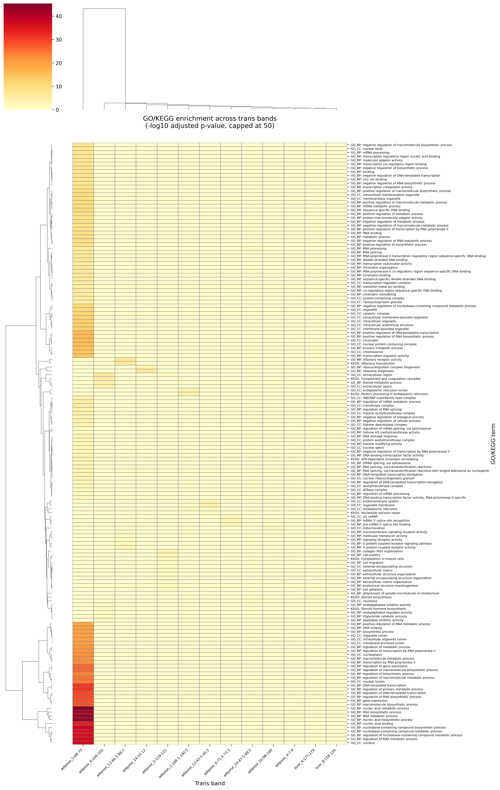
Figure 6 highlights the dominant adipose signature. The strongest adipose signal is driven by the large Chr5:68–70 Mb hotspot and is dominated by RNA and nucleic acid metabolism, gene-expression regulation, nucleus/chromatin localization, and nucleic-acid binding. The top term, nucleic acid metabolic process, contains 257 genes from this band with an adjusted p ≈ 4 × 10⁻⁴⁶. These findings suggest that the major adipose trans hotspot regulates core gene-expression machinery. Other adipose bands point to collagen/extracellular matrix (Chr5:119–121), ribosome biogenesis (Chr14:10–12), ER/protein processing (Chr2:188.5–190.5), and olfactory receptor activity (Chr13:86.5–88.5).
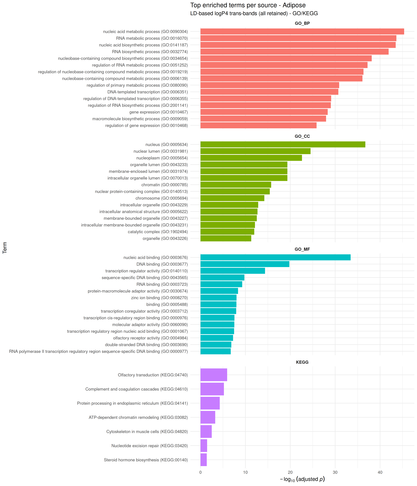
With the stricter universe filter, only two liver bands produced significant GO/KEGG terms (Figure 7). Liver Chr4:177–179 Mb is enriched for Steroid biosynthesis (KEGG), while liver Chr8:118–120 Mb is enriched for attachment of spindle microtubules to kinetochore (GO BP). The lipid/sterol theme is consistent with liver metabolic function, but the limited number of enriched liver bands reflects both the smaller liver peak set and the conservative universe filter.
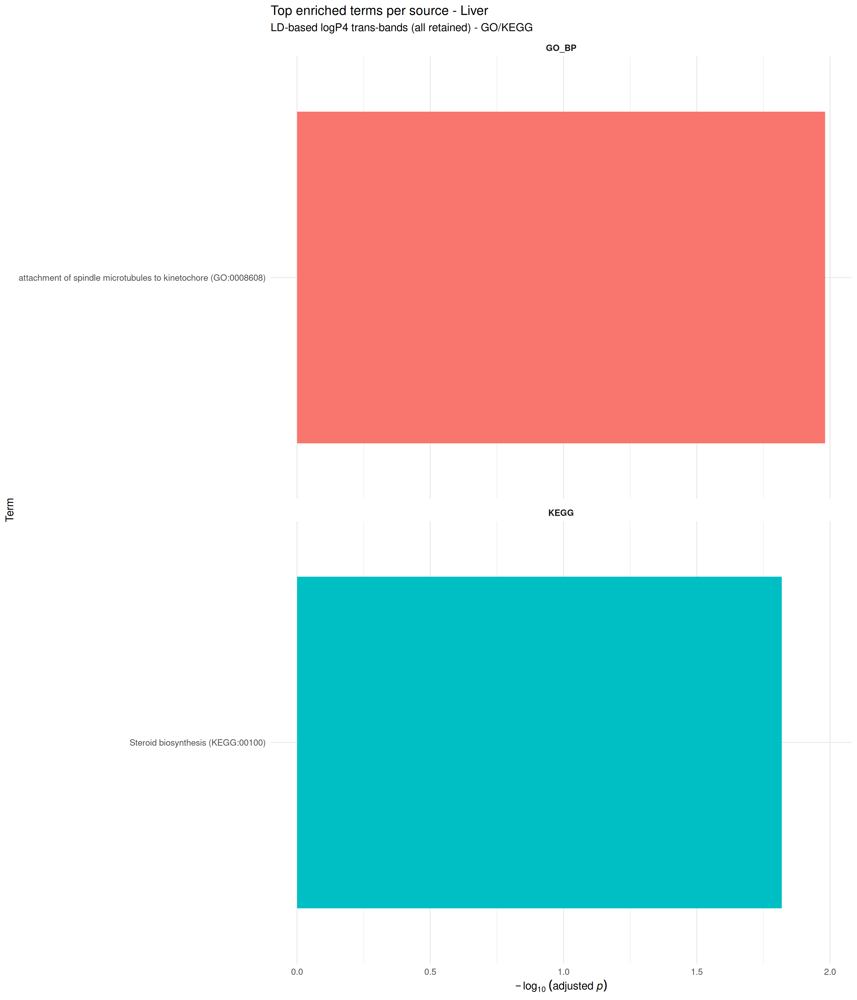
Figure 8 summarises the pathway comparison between tissues. Adipose contributes the majority of terms, especially in GO BP/CC/MF; liver contributes KEGG metabolic and immune-related terms, and no GO/KEGG term is shared.
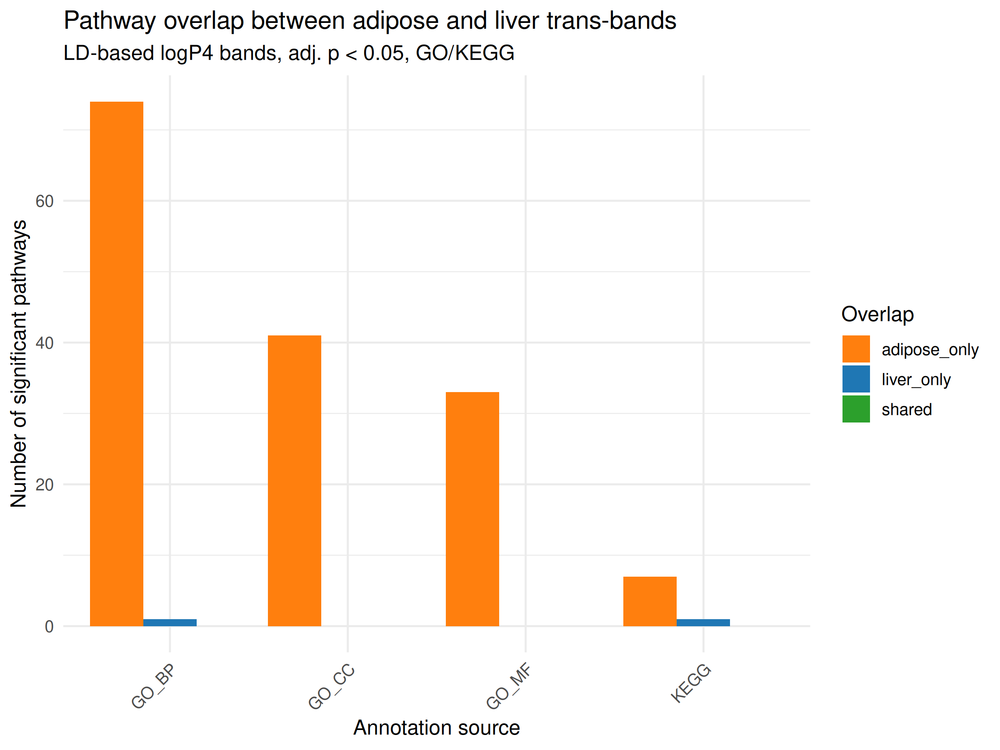
The GO/KEGG-only enrichment results demonstrate that the LD-based trans bands are biologically interpretable, even under a very conservative universe filter. Adipose trans hotspots converge on RNA/nucleic-acid metabolism and chromatin organization, with the Chr5:68–70 Mb band acting as the dominant hub. Liver hotspots, by contrast, point to steroid/sterol metabolism. The complete absence of shared GO/KEGG terms between tissues argues that these are genuine tissue-specific regulatory signals rather than generic artifacts.
These findings justify the next phase of the project: pan-genomic re-mapping with structural variants. SV-aware genotyping is expected to (i) refine the causal haplotypes within the priority hotspots, (ii) capture variation missed by the current SNP-only panel, and (iii) help explain tissue specificity if the same SV has different regulatory consequences in adipose and liver. The driver genes identified here, transcriptional/chromatin regulators in adipose and cholesterol/steroid biosynthesis enzymes in liver, provide focused candidate mediators for colocalization and experimental follow-up.
Immediate next steps are:
LD-based cis and trans classification. For each eQTL peak, the nearest genotyped marker was identified and r² was computed with all markers within 5 Mb. The cis interval was defined as the contiguous region where r² ≥ 0.6 with the lead marker. A gene was classified as cis if it fell within this interval; otherwise the peak was trans.
Trans band detection. Trans bands were identified by sliding a 2 Mb window in 0.5 Mb steps across the genome, counting trans eQTL peaks per window, and applying a 10 Mb exclusion zone. Bands required at least three peaks.
Universe filter. For the enrichment background, raw GEMMA tables were filtered to well-annotated genes with 4 ≤ -log₁₀ P ≤ 80. This yielded 6,540 adipose, 3,790 liver and 8,349 combined genes. Poorly annotated genes (LOC, Riken, pseudogenes, uncharacterised) were removed using the same rules as the main Python pipeline.
Functional enrichment. Over-representation analysis was performed with gprofiler2 (organism rnorvegicus) against GO BP/CC/MF and KEGG only. A custom background (custom_annotated) was supplied for each tissue. Adjusted p < 0.05 was considered significant.
Visualisation. Peirce-style cis–trans and Manhattan
plots were generated with custom Python scripts using matplotlib;
LocusZoom, heatmap and UpSet plots were generated with Python/R
(matplotlib, seaborn, UpSetR); GO/KEGG summary plots were generated with
R/ggplot2. Interactive Manhattan and LocusZoom plots were produced with
Plotly. All figures are available in reports/.